Audiogravity is a streamer. A conductor, not a soloist.
MPD, Roon, HQPlayer, AirPlay, UPnP sources and renderers, internet radio — every engine, every source, down to DSD and Hi-Res PCM. Send your library to any network renderer. Audiogravity installs, configures and conducts every one of them — from the system up to your Qobuz, Tidal and HIGHRESAUDIO libraries. It replaces none of them. One interface. Total control. Every engine, every source, down to DSD and Hi-Res PCM. Audiogravity installs, configures and conducts them, and replaces none of them.
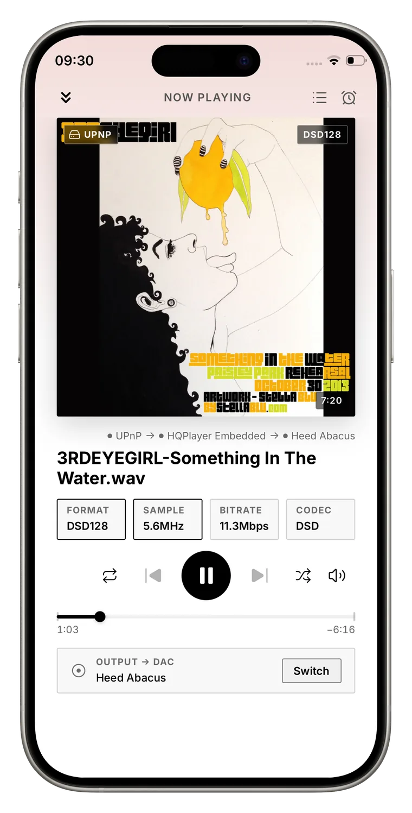
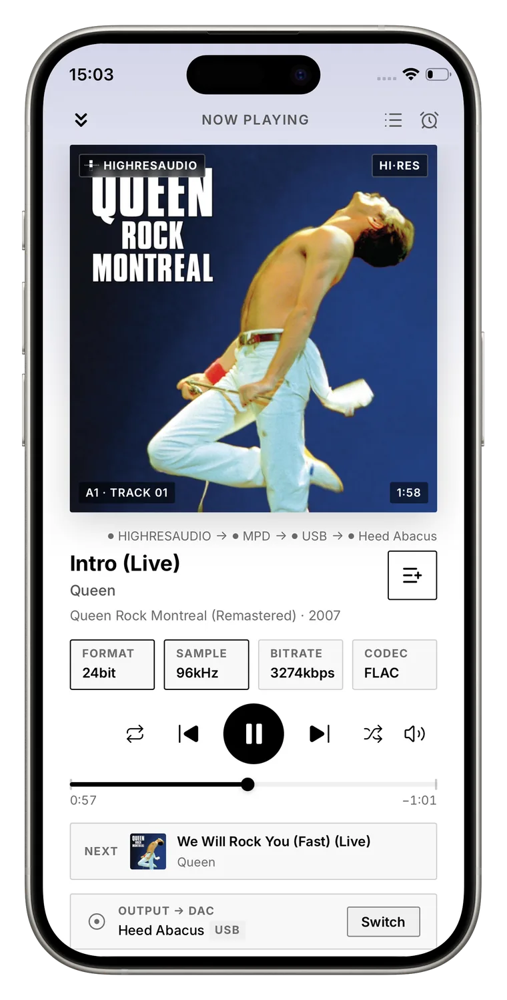
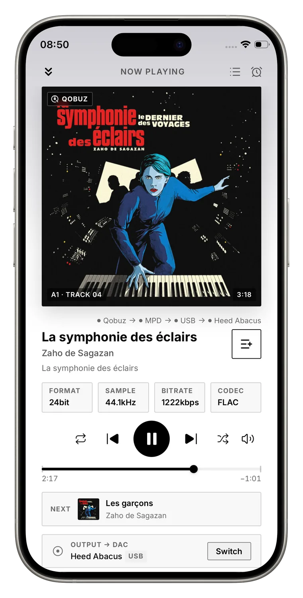
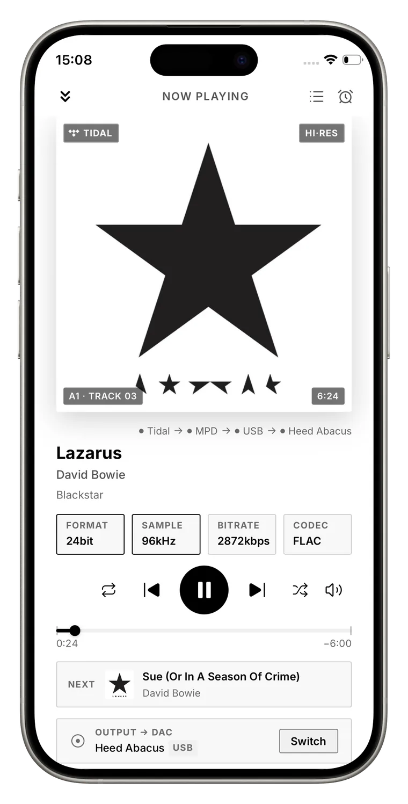
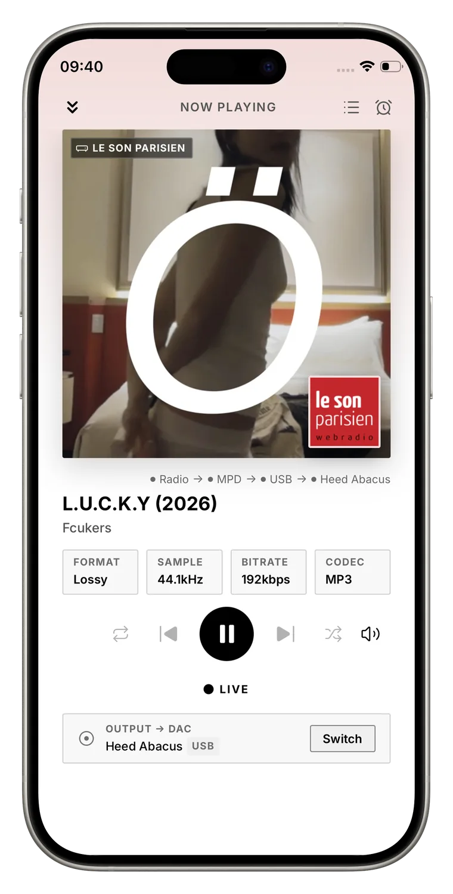
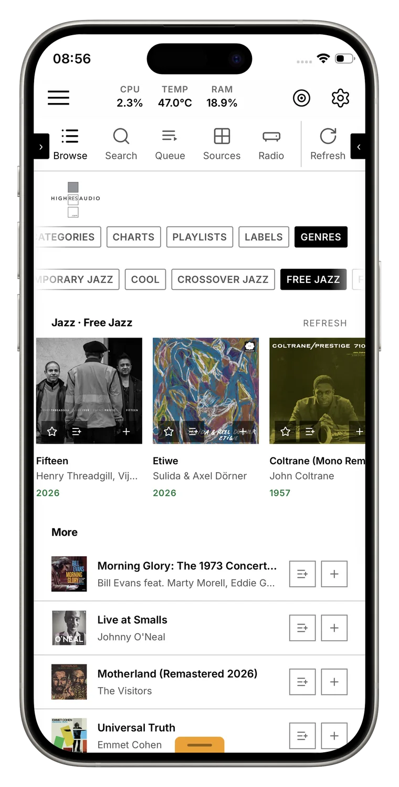
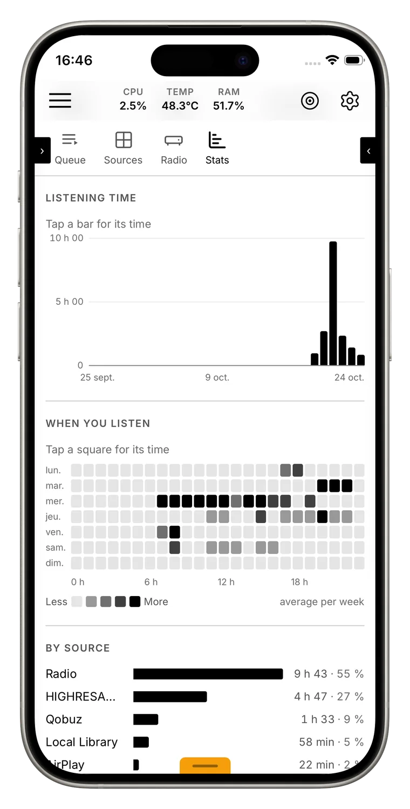
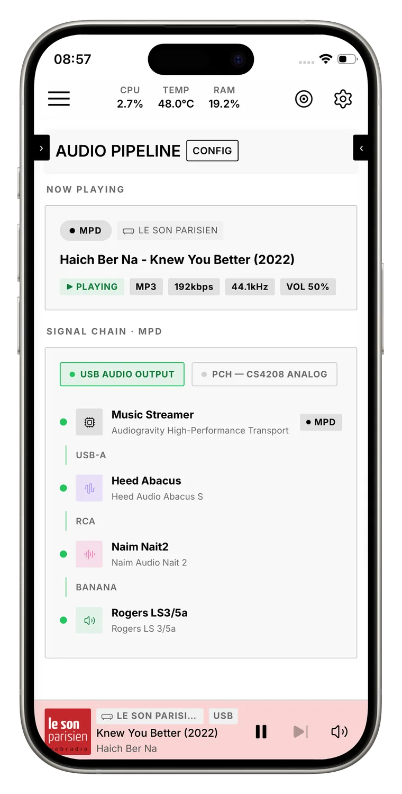
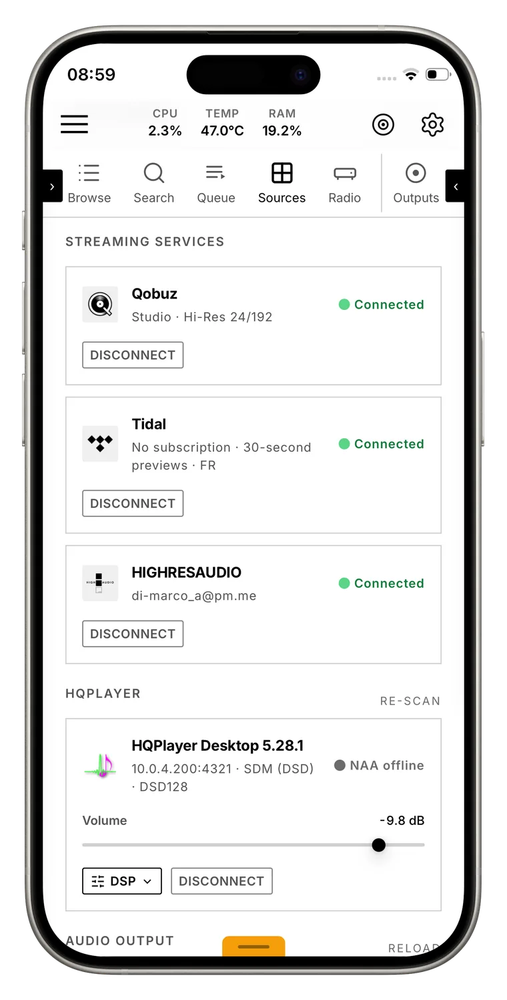
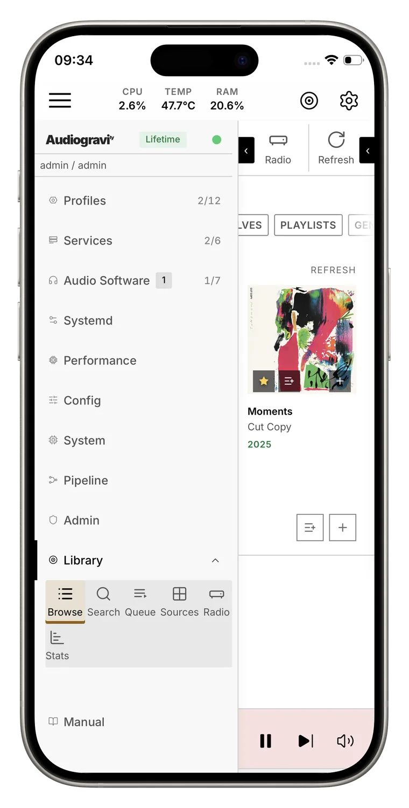
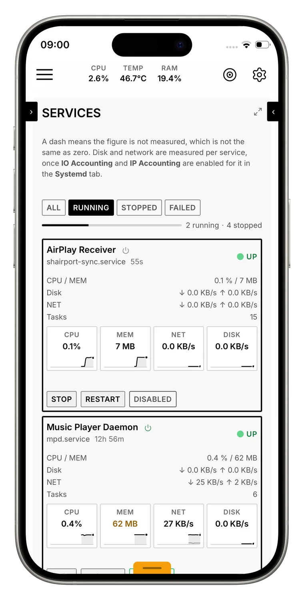
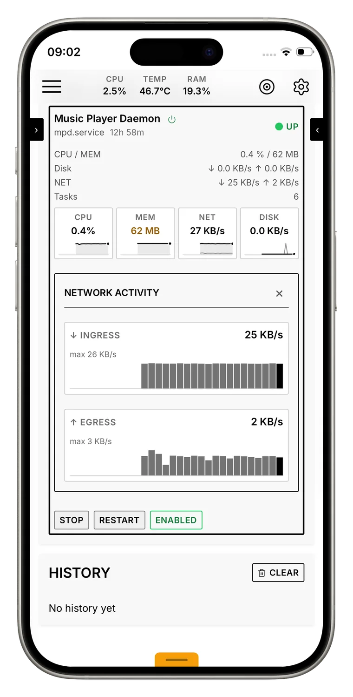
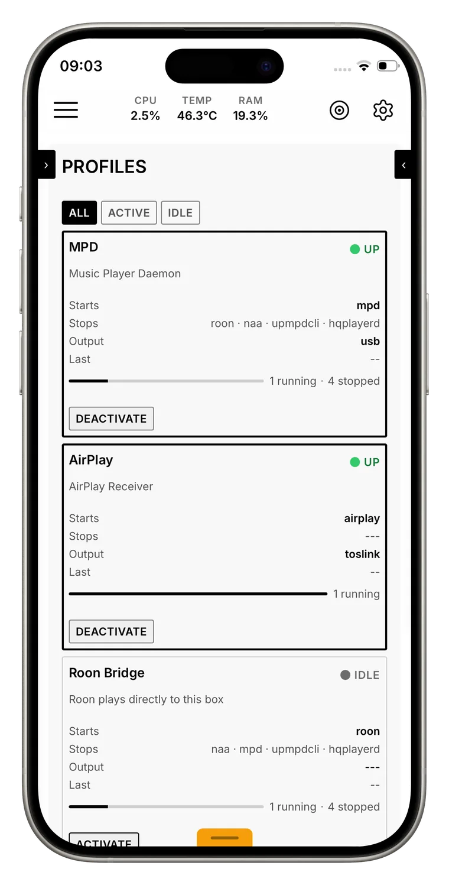
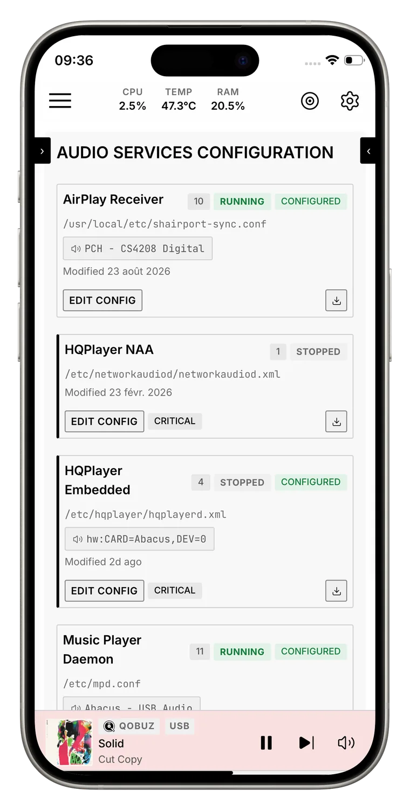
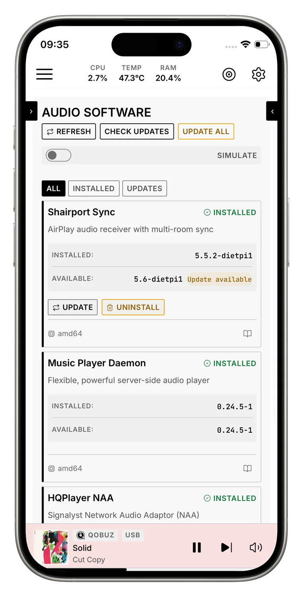
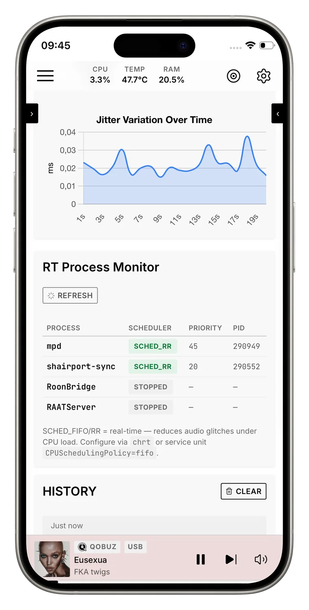
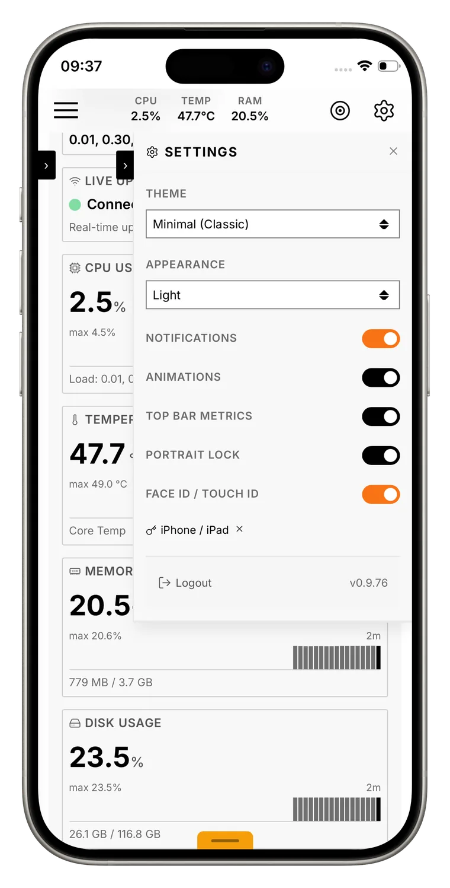
"The enemy of bit-perfect playback isn't the engines you trust. It's the kernel scheduler interrupting your audio thread for 200 µs to handle a network IRQ."
Twenty-two modules orchestrating every layer of the stack — system tuning, service control, signal-path visualisation, unified transport across MPD, Roon, HQPlayer, AirPlay, UPnP and internet radio. Starter plays the music on the box and runs the whole machine; Pro adds the streaming services, your media servers, Roon and HQPlayer — and the deep audio-engineering surface.
One interface, one set of controls, every engine the box runs — MPD, AirPlay and UPnP, and with Pro, Roon and HQPlayer, simultaneously. A stream origin badge always tells you where the audio is coming from, and the live Hi-Fi readout — format (PCM / DSD), sample rate, bit depth, instantaneous bitrate — refreshes on every track change. The queue reads every source, with per-source badges and a filter when they mix. Audiogravity conducts; your engines play.
MPD · AirPlay · UPnP · stream origin · queue by source · sleep timer · live Hi-Fi readoutAudiogravity scans your network on demand. UPnP media servers, HQPlayer, your Roon Core and its zones — all picked up automatically.
UPnP · HQPlayer · Roon · SSDPBrowse Roon, MPD, MinimServer, Qobuz, Tidal and HIGHRESAUDIO from one interface — album view, full-text search, direct playback with cover art. Star an album to favourite it on its streaming service; tap an artist in search to open their albums across every source. Your Qobuz and HIGHRESAUDIO playlists are managed from here too: add the track playing or a whole album, open a playlist to play it from any track, rename it or tidy it up. Pick a track, pick a renderer: the music flows at full resolution — even local NAS/USB files cast to a network renderer, bit-perfect. Qobuz, Tidal and HIGHRESAUDIO require an active subscription. Your own music on the box — browse, search, queue, cast to a renderer — comes with the free Starter Edition.
Roon · MPD · UPnP/DLNA · Qobuz · Tidal · HIGHRESAUDIO · favorites ★ · your Qobuz & HIGHRESAUDIO playlists · local cast · UPnP renderersMost apps treat radio as a second-class source — a different player, a degraded path to the DAC, no metadata, no cover art. Here it isn't. Stations flow through the same transport as your FLAC library, route to the same output zone, surface the same Hi-Fi readout. Curate your own collection, filter the catalogue down to the stations that really stream lossless, save the ones worth coming back to. With HQPlayer as your output, with Pro, they can go through its filters too — stations broadcasting in AAC included, converted to FLAC as they arrive.
Same transport · Lossless filter · live metadata · cover artRun HQPlayer Embedded on the box itself: install it from the Audio Software page — its licence is shown first, and nothing installs until you accept it — choose its output as you would any player's, and open its own settings page in one tap. Or control the HQPlayer you already run on your network, auto-discovered and connected in one tap. Either way, change its sound-shaping settings — interpolation filter, noise shaper, output mode and volume — without leaving the couch, and send anything you can browse — your own library, a media server, internet radio, Qobuz, Tidal and HIGHRESAUDIO — through its filters and upsampling, bit-perfect. Run more than one? Each keeps the filter, shaper and mode you chose for it. What HQPlayer cannot read — an ALAC library, a station broadcasting in AAC — is converted to FLAC on the way, losslessly; DSD is never converted. Move around inside a track from your phone, and the display follows the album, track by track. Audiogravity also recognises which HQPlayer it is connected to, and which version, and keeps the NAA on your box on the matching line.
HQPlayer Embedded on the box · Filter · Shaper · Mode · Volume · Auto-discovery · ALAC & AAC converted · NAA kept in step · Any source through HQPlayer"Roon + HQPlayer" for serious listening. "MPD + upmpdcli" to expose your streamer as a UPnP renderer — controllable from any UPnP control point: JPLAY, BubbleUPnP, mconnect. OpenHome apps such as Kazoo work too — one switch in the UPnP bridge's configuration form. "AirPlay only" for background music. Each profile lists exactly which services to start and stop — conflicts resolved automatically, and a live health bar shows the whole chain is up.
Conflict resolution · live health · historyAudiogravity becomes your UPnP control point: discover every renderer on your network — network amplifiers, dedicated streamers, DLNA speakers — and drive them directly from the interface. Pick your music, hit Play: the stream reaches the renderer bit-perfect, at full resolution, without touching the server's audio path. A live "Up next" strip shows the next track as it is loaded onto the renderer.
UPnP renderers · DLNA · bit-perfect · output selector · Up nextGet notified the instant an audio service fails, the CPU crosses the critical temperature, the disk is almost full, a Raspberry Pi's power supply runs too weak, a new version of Audiogravity or of your audio software is available, or a profile is activated from another device. Even when the PWA is closed.
Service down · Critical temperature · Disk almost full · Weak power supply · Update available · Background pushYour player gets the processor before anything else, on the cores you choose for it, with its audio held in memory — never pushed to disk mid-track. Written as system overrides that survive updates and can be undone at any time.
FIFO · RR · MEMLOCK · RTPRIORun the test from your browser and read the result in microseconds: proof that the machine really holds a steady beat, not just that the software is installed. Compare before and after, each run timestamped and kept.
cyclictest · iPerf3 · jitter histogramsThe cores playing music run flat out; the others stay quiet and cool. A per-core heat map shows where the warmth is, and a THROTTLED badge appears the moment the machine slows itself down to cope — before your ear catches it.
governor · Performance · Powersave · thermal mapNew box? The guided setup detects your DAC and music library and generates a minimal config for MPD, AirPlay and UPnP, bit-perfect for MPD at full volume; Guided mode then changes an output or library in two clicks — only what you touch is rewritten. For deeper edits: form view, a full text editor with syntax highlighting (JSON, INI, XML, libconfig), a side-by-side diff to review every change, and an automatic backup before each save, restored in one click.
guided setup · mpd.conf · AirPlay · upmpdcli · live diffAn interactive graph of your entire Hi-Fi chain — every source, every active audio process, down to the DAC. Each link shows the exact stream format (PCM / DSD · 44.1 kHz → 768 kHz · 16 → 32 bit), a full-resolution badge, per-link latency and live play state. Click a link to hot-reroute the audio to a different DAC — gapless on MPD; AirPlay warns you first, since its receiver has to restart.
interactive graph · pan · zoom · minimap · hot reroutingLive systemd state. Instantaneous CPU, memory, network and disk with LOW/MEDIUM/HIGH thresholds. Uptime shown.
Live systemd · sparklines · uptimeEvery ALSA card, USB interface, subdevice and hardware capability your kernel sees — without
aplay -l or lsusb. Plus CPU, temperature, memory,
disk and network at a glance.
Face ID, Touch ID, fingerprint, YubiKey. Multiple devices per user, managed individually. Role-based access — Admin, User, Guest.
FIDO2 · Face ID · YubiKey · RBACWhen a new release ships, the Admin tab shows a banner: one click and your password — the box downloads, swaps and health-checks the new version, with live progress across the restart. If anything goes wrong it rolls back automatically to the previous version. Never left on a broken update, never a terminal.
Update banner · health-check · auto rollback · no terminalHow long you listened over the past week, month or year, or since the very first track — your library, the streaming services, internet radio, AirPlay and your media servers alike. Which outputs it went to, how much was Hi-Res or DSD, the genres you came back to, your most played artists, albums and tracks, with their covers. It stays on the box, and you can switch it off or clear it at any time.
time listened · sources · outputs · Hi-Res share · genres · most played · stays on the boxThe pipeline graph is the signature view of Audiogravity. It renders your
audio-topology.json — the physical and
virtual map of your Hi-Fi chain — as a live, interactive SVG you can pan, zoom and steer from. Click any
link to open the steering popover and reroute the ALSA output — gapless on MPD; AirPlay warns
before restarting its receiver.
A 200 µs interrupt is enough to make a DSD256 stream audibly grainy. Audiogravity gives each audio service the priority it needs, and writes those settings beside the originals rather than over them — an update cannot undo your work, and one click puts everything back. Then measure the result yourself, in microseconds.
Live CPU, temperature, I/O and network streamed to every connected browser. Backs off to 30 s at idle.
On a tuned Pi 5 with FIFO/80, CPU pinning and MEMLOCK — measured from the browser, archived with timestamp.
Playback runs entirely on your local machine. No account. No telemetry. Your credentials and system state stay on your network — only cover-art and radio-catalogue lookups query public metadata services.
A streaming system is a stack. Audiogravity does not compete with audio engines like MPD, Roon Bridge or HQPlayer — it orchestrates them, installs and configures them, and tunes the OS underneath.
The takeaway: Audiogravity owns the interface and orchestration layers, installs, configures and drives the audio engines audiophiles already trust (MPD, upmpdcli, AirPlay, HQPlayer Embedded, the HQPlayer NAA + DSP, Roon, network UPnP renderers), connects the content sources they rely on (NAS, Qobuz, Tidal, HIGHRESAUDIO, internet radio, MinimServer), and tunes the OS kernel underneath — without replacing or hiding any of them.
Network streamers sell for anywhere between a few hundred and several tens of thousands of euros. For the part that makes one a streamer — receiving, decoding, handing the result to a DAC — it is a board running Linux with a software layer on top. That layer is, most of the time, the one Audiogravity drives: ALSA, MPD, upmpdcli, Shairport-Sync.
Audiogravity is a streamer, and so are most of the columns below — the table shows where each one stops. What sets it apart is that it does not ask you to choose against Roon or HQPlayer: it installs Roon Bridge to be a Roon endpoint, and HQPlayer NAA to be an HQPlayer endpoint — or HQPlayer Embedded itself, running on the box — so both keep working inside it. JPLAY iOS is listed for what it is: a control point, not a streamer.
| Capability | Audiogravity | Roon | Volumio | Moode | HQPlayer | JPLAY iOS |
|---|---|---|---|---|---|---|
| Product nature | Streamer (orchestrates audio engines) | Streamer + cloud platform | Streamer | Streamer | Streamer (DSP focus) | Controller only |
| Multi-engine orchestration (MPD + Roon + HQPlayer + AirPlay) | partial | partial | partial | — | partial (HQPlayer) | |
| Tidal, Qobuz & HIGHRESAUDIO in the library | partial (Tidal, Qobuz) | (Premium) | partial (Qobuz, via upmpdcli) | partial (Qobuz, HIGHRESAUDIO) | ||
| UPnP MediaServer browse & search (NAS via MinimServer, upmpdcli — results directly playable) | — | — | ||||
| UPnP MediaRenderer control | control point | — | — | — | — | |
| UPnP MediaRenderer (controllable from JPLAY / BubbleUPnP…) | via upmpdcli | partial (RAAT) | — | — | ||
| Roon Bridge integration | native | — | — | |||
| HQPlayer integration | DSP remote + NAA | as endpoint | — | — | native | |
| AirPlay receiver | — | — | ||||
| System tuning for audio (FIFO, MEMLOCK, CPU affinity) | — | — | — | — | — | |
| Latency measured in microseconds (cyclictest, from the interface) | — | — | — | — | — | |
| Live signal-path visualization | partial | — | — | — | — | |
| Audio config editor (diff + automatic backup) | — | partial | partial | — | — | |
| DSD volume protection | partial | — | — | partial | ||
| Internet radio (Radio Browser + custom stations) | — | |||||
| PWA / web-installable | — | partial | partial | — | — | |
| WebAuthn / biometric login | — | — | — | — | — | |
| Self-hosted (no cloud account) | account required | partial (Premium needs an account) | ||||
| Platform | Linux server · iOS / Android PWA + browser UI | Multi-OS (native apps) | Linux server · browser UI + native apps | Linux server · browser UI | Windows · macOS · Linux | iOS · Apple-silicon Macs |
| Pricing model | Free (Starter) / €49 lifetime (Pro) | $14.99 / month or $829.99 lifetime | Free / Premium €7.49 / month or €69.99 / year | Free | €319 (version 6) | $49.99 / year or $199 lifetime |
supported · partial = limited · — not available. Comparison based on public information from each vendor's documentation, checked on 17 October 2026.
Audiogravity isn't just a web interface — it's a Progressive Web App, installable from Safari or Chrome to your home screen. Full-screen, dedicated icon, biometric login, push notifications when a service falls over.
From Safari (iOS) or Chrome (Android), add Audiogravity to your home screen. The app opens full-screen, without browser chrome, with its own icon. After a first password login, register a passkey on the device — every subsequent login is Face ID, Touch ID, fingerprint or YubiKey. Set up over a secure connection, the box now proves who it is. One approval per device — phone, tablet or computer — and the warnings stop for good: your browser treats it like any trusted site, which is what lets the app claim its own icon and open full-screen.
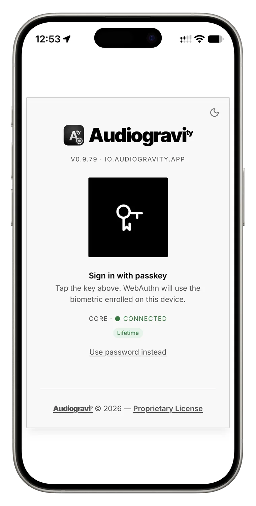
Audiogravity comes in two editions: the Starter Edition, free, and the Pro License, a lifetime license that permanently unlocks every feature on one machine. Every install starts with thirty days of Pro, so you can try it all before you choose.
The interface is open source (MIT) — fork it, contribute, or build on it. The core engine remains proprietary.
Full access to every feature from the first start. No action required: the days remaining are shown in Admin › License, and after thirty days the box moves to the Starter Edition on its own.
Start trialActivates automatically when the trial expires — no action required. Everything you need to run your audio system and play the music on it. Includes all v1.x updates.
Permanently unlocks every Pro feature. Bound to one installation. Includes all v1.x updates. Pro holders get a preferential upgrade price for new major versions.
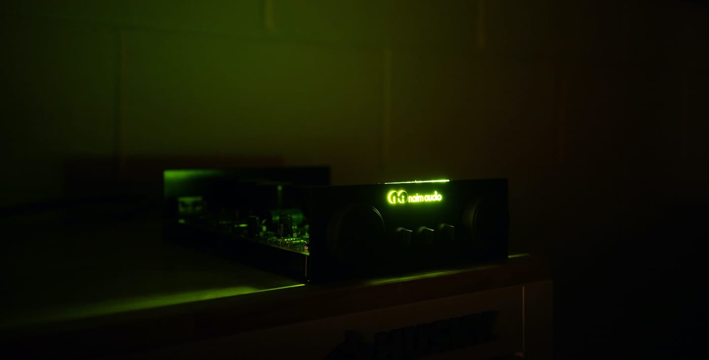
The V1 scope is complete, and none of what follows belongs to it. These are some of the directions on the table — the list is not closed, none of them is promised, and the order is not fixed. What owners ask for is what decides it.
If one of these matters more to you than the others, say so — open an issue or write to contact@audiogravity.app.
No compilation, no dependency hell, no manual configuration. The installer
detects your architecture, generates security keys, configures the systemd service and starts
everything. Then install your audio engines in one click from the interface (MPD, AirPlay,
UPnP…) and let the guided setup wire your DAC and music library. A few minutes from curl to listening.
# All-in-one — core + ui, works on your LAN
curl -fsSL https://audiogravity.app/install.sh | sudo bash
# Then open the address it prints — your streamer by name:
https://<your-streamer>.local
# Trust its certificate once on each phone (it prints how):
# app icon, Face ID and notifications follow.
# Behind your own HTTPS reverse proxy? Plain HTTP:
curl -fsSL https://audiogravity.app/install.sh | sudo bash -s -- --http
# Optional — your own domain: Face ID from any network,
# and no certificate to trust on each phone:
curl -fsSL https://audiogravity.app/install.sh \
| sudo bash -s -- \
--public-url https://your-domain